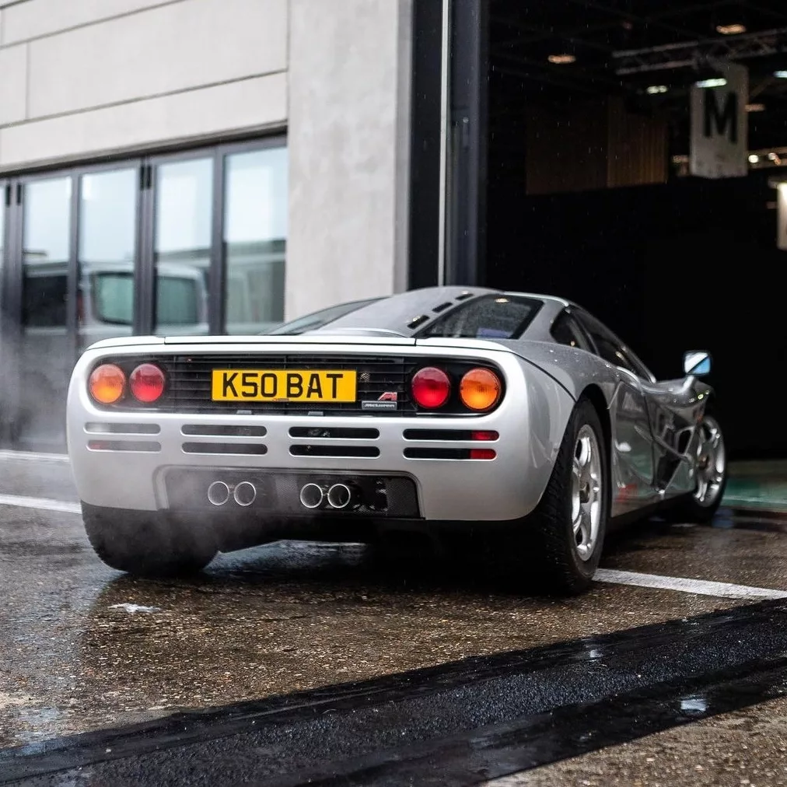
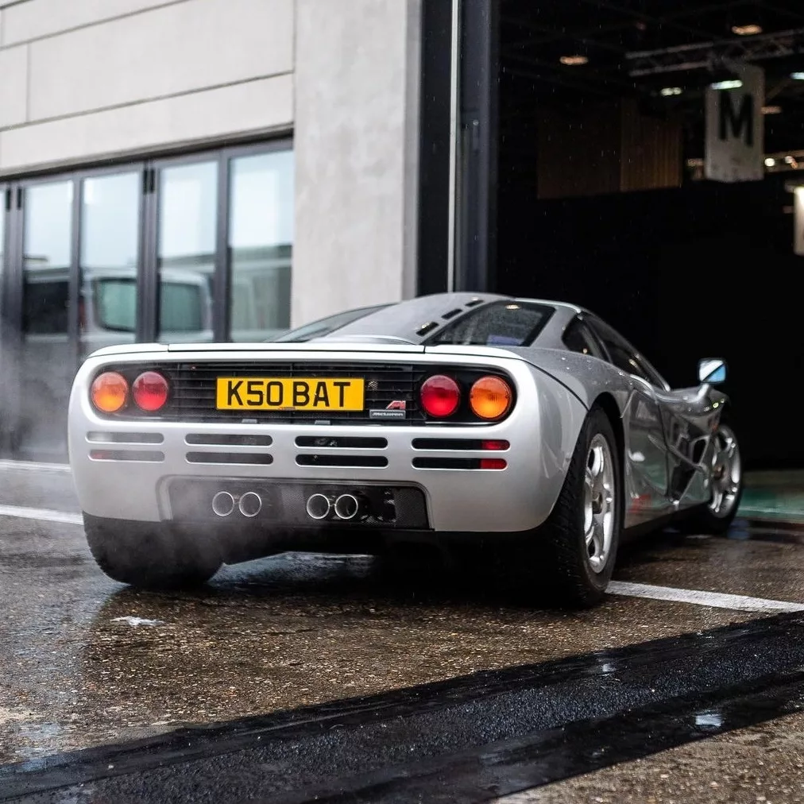

.jpg) 

Velocidad máxima: 386,4km/h
0-100 km/h: 3.2s
Potencia máxima: 627cv
Longitud: 4292mm
Anchura: 1820mm
Altura: 1140mm
Batalla: 2718mm
Peso: 1140kg
Diseñado por Gordon Murray y Peter Stevens, el Mclaren F1 fue un antes y un después para la historia
del automóvil. En su momento fue el auto de producción más rápido del mundo y hasta el día de hoy sigue siendo el
automóvil de fabricación en serie con motor atmosférico más rápido del mundo.
Uno de los aspectos más llamativos era que tenía tres asientos, uno de ellos en posición central para el
conductor y dos a sus costados para los acompañantes, esto se debe a querer ofrecer una mejor posición de
manejo al conductor, además de asemejarse a la posición de manejo de un monoplaza de F1.
El interior era bastante simple, aunque en general presentaba algunas tecnologías que tardarían varios años
en verse en otros autos, como por ejemplo: un transmisor de datos que mandaba información a la central de
McLaren con cifras clave del auto que permitían conocer si sufriría alguna avería o si algún componente
estaba más desgastado de lo usual, con lo cual la marca podía comunicarse con el dueño y darle un
servicio al auto previniendo daños severos a cualquier componente. Aunque con respecto a las asistencias de manejo, no poseía ninguna.
El nombre F1 salió como una broma, tal y como Murray lo cuenta en un programa de Discovery Channel,
Ultimate Cars, al hacer alusión al Ferrari F40 que estaría 39 escalones más abajo que su McLaren, por
eso F1. Su primera aparición en público fue en Mónaco el 28 de mayo de 1992.
Se ensamblaron 100 unidades que fueron vendidas y entregadas a los clientes, de las cuales 64 eran de
la versión de calle, 5 LM para conmemorar la victoria de Le Mans en 1995, 3 GT (incluyendo un prototipo)
y 28 GTR de carreras que fueron construidos para clientes privados que compitieron en las series de FIA
GT y Le Mans.
Tiene un motor de gasolina V12 a 60° naturalmente aspirado de 6064cm³ proveniente de BMW
con una distribución de doble (DOHC) árbol de levas a la cabeza con 4 válvulas por
cilindro (48 en total) accionadas por cadena y taqués hidráulicos, además de un sistema continuo de distribución
de válvulas variable (VVT), alimentado por inyección multipunto de combustible Bosch Motronic. Está ubicado en posición central-trasera y orientado
longitudinalmente.
Su chasis es un monocasco de fibra de carbono y en su construcción también se utilizan numerosos
componentes, como: titanio, magnesio y kevlar, para ofrecer una carrocería ligera y con gran
resistencia a las fuerzas de gravedad que se generaban en su andar y, por si no fuera poco, parte
del motor y capó se cubrían con un baño de oro de 24 kilates y no solamente por capricho, ya que se
trata de un material que disipa mejor el calor generado. También, está acoplado a una transmisión manual
de 6 velocidades transversal con embrague de triples discos AP y usaba frenos carbono-cerámicos, además de un alerón que se desplegaba al frenar.